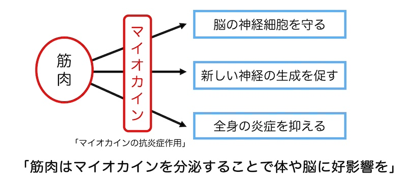
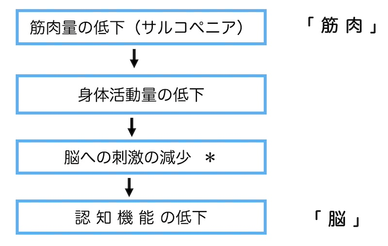
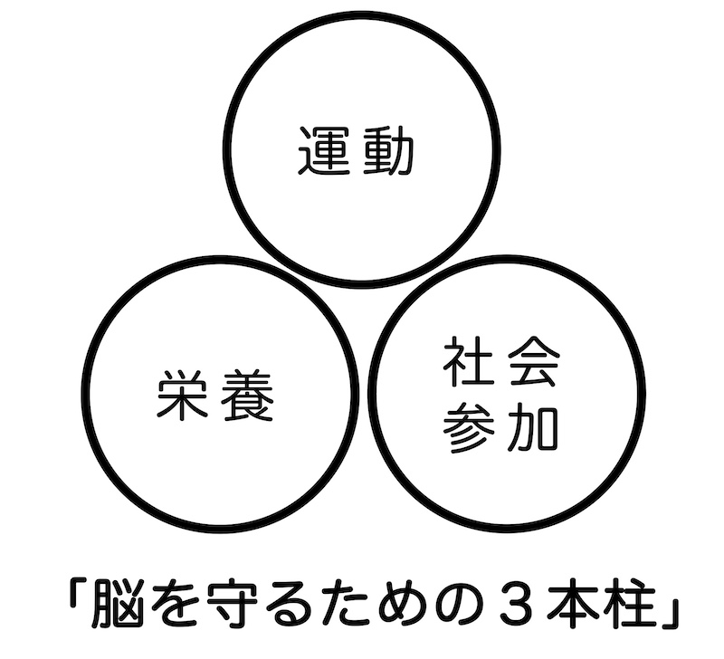

公開日：2026年3月｜最終更新：2026年7月
「筋肉」は単なる運動器ではなく、「脳」に影響を与える臓器であると考えれています。
この視点は、高齢者の健康を考える上で重要なテーマです。筋肉を動かす運動は認知症予防にも効果があります。散歩だけでも良いが、人との関わりなど脳を使う運動である、「テニス」は最適かもしれません。
従来の視点では、「筋肉＝体を動かすだけの組織」と考えられていました。
最近の研究から、筋肉は“マイオカイン”という物質を分泌することで、体や脳に作用することがわかってきています。

マイオカインの主な働きは、筋肉が動くと分泌される物質が、「脳の神経細胞を守る」「新しい神経細胞の生成を促す」「炎症を抑える」などの作用を持つことがわかっています。代表例は、BDNF（脳由来神経栄養因子）で、記憶や学習能力に関係するという因子です。脳だけではなく、全身の炎症を抑えると言われています。
最近の研究では、「筋肉量の少ない人ほど、認知機能が低い」という結果が数多く報告されています。
つまり、

という流れが考えられます。
上の図の＊のところで、上の1)でご紹介した筋肉から分泌される「マイオカイン」による刺激が欠落しているため、筋肉量が低い人は、認知機能が低下しやすいと考えられています。
運動をすると、先ほどご紹介した筋肉からのマイオカイン（BDNF）の刺激に加えて、「脳の血流が増える」「海馬（記憶の中枢）が大きくなる」などの効果も指摘されています。
特に効果が高い「運動」は、速歩、軽い筋トレ、スクワット、テニスなどの対人スポーツです。
対人スポーツは「判断」「反応」「予測」行動を伴うため、脳への刺激が強いとされています。「テニスは脳に良いスポーツである」という研究結果が多く見られます。
３つの理由が提唱されています。
身体活動量の低下により、脳への刺激が減少します。
筋肉量の少ない人は、「慢性炎症」「インスリン抵抗性（インスリンが効かない）」が増えやすく、これが脳に影響し、機能を低下させます。
筋肉が減る人の特徴は「低栄養」「たんぱく質不足」になっていることが多く、これが「脳の働き」に影響しています。
現在の「老年医学」では「筋肉を守ること＝脳を守ること」と考えられています。

（専門的ですので、読み飛ばしていただいても構いません）
結論として「有酸素運動（歩行など）」「筋力トレーニング」「頭を使う複雑な運動（対人スポーツ）」の組み合わせが最も効果的と考えられます。
大規模研究で、心肺機能（全身持久力）が高い人ほど、認知症のリスクが低く、遺伝的リスクが高い人でも約35%低下した」ことが報告されています。参考文献１）
中年期（45〜65歳）の研究でも、速歩など心拍数が上がる程度の中程度の有酸素運動（ウォーキング、軽いジョギングなど）を継続している人は、認知症リスクが低いことが効果的とされています。参考文献２）
最近の研究では、「筋力低下」「サルコペニア」「低筋肉量」と認知症との間に正の相関があることが多数報告されています。
筋トレ＋有酸素運動の併用が推奨されています。
近年の研究では、頭を使いながら体を動かす運動（デュアルタスク）や、判断・予測・反応を伴う複雑な運動が、脳の広い領域を活性化し、実行機能（判断力・注意力・抑制機能など）の向上に役立つことが報告されています。参考文献３）４）
スポーツの例では、バドミントンやテニスなどのように、相手の動きを予測し、瞬時に判断して身体を動かすスポーツは、同じ強度のランニングと比べて、実行機能の改善効果が大きいことが報告されています。参考文献４）
日本人高齢者4,358人を4年間追跡した研究では、週2回以上の運動で認知機能低下のリスクが低く、特に「他人と一緒に週２回以上運動」する人では、そのリスクが約34%低下しました。また、集団全体で「週２回以上他者と運動する」ことが実現した場合、認知機能低下を約29%遅らせる可能性が示されました。つまり、「会話」「判断」「協調」「感情刺激」が起こり、リスクが低下するようです。参考文献５）
認知機能の維持に効果の高い運動の条件は、「心拍数が上がる（有酸素）」「筋肉を使う（筋力刺激）」「頭を使う（判断・反応・戦略）」です。
この３条件を満たす代表例は、「テニス」「卓球」「バトミントン」「ダンス」「球技全般」です。
「歩くだけでも脳には良いが、人と関わりながら頭を使う運動は、さらに良い」
参考文献